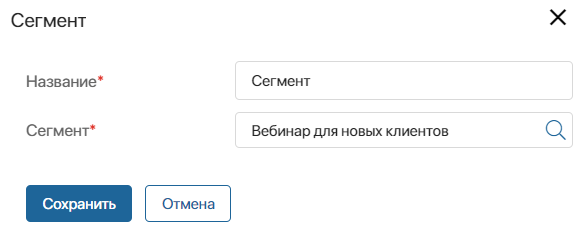
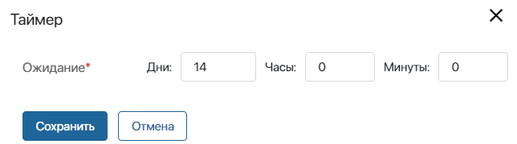
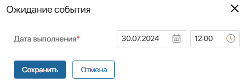

A customer journey map scenario is a chain of sequentially executed triggers, events, and activities for sending emails to subscribers.
Scenarios are configured in the customer journey map designer and always start with a Segment block, which is placed on the modeling canvas by default and cannot be deleted. Complete the scenario with triggers, activities, gateways, and events. To do this, drag the required blocks from the sidebar and connect them.
начало внимание
Working with customer journey maps is only available in the On-Premises edition.
конец внимание
To build a scenario, follow the steps below:
- Select the segment for which the map is intended.
- Add a trigger, which tracks specified changes in the app items where the subscribers of the segment selected in step 1 are specified.
- Supplement the map with a Timer or Await Event block to determine when the scenario moves to the next step.
- Configure an email campaign to be sent to subscribers by adding an Email activity. This step is mandatory in any scenario.
- If you need to split the script into multiple paths for different groups of subscribers, use a gateway.
- Complete the scenario chain with the End event. This step is also mandatory.

Depending on your marketing goals, you can add several triggers, events, gateways, and Email blocks to the scenario. Please note that there is always only one transition from the block to the next one. Only the gateway splits the script into multiple paths.
Let’s take a closer look at the settings of each block. To go to them, double-click on the block.
Step 1: Select a segment
The scenario always starts with the Segment block. In its settings:

- Specify the name of the block in the scenario.
- Select the segment for whose subscribers all the following scenario steps will be performed. You can specify a static or dynamic subscriber segment. For a dynamic segment, the list of subscribers is generated during the entire period of map activity. If during this time a subscriber appears for whom the conditions specified in the segment are met, an instance of the map will be launched for that subscriber and the scenario will proceed to the next step.
Step 2: Set up a trigger
Place a trigger after the Segment block. It tracks changes in the app items where contacts are specified. For more information, read the Triggers in a customer journey map scenario article.
Step 3: Configure the event
You can set the execution time for the next steps of the scenario using the Trigger and Await Event blocks.
Timer
It tracks when the specified wait period is over. After that, the scenario will continue.

For examples with this block, see the Feedback after purchase and Golden customer promotion case descriptions.
Await Event
It tracks when the specified date and time occurs. After that, the scenario will continue.

For an example with this block, see the Invitation to a webinar case description.
Step 4: Set up an email campaign
The Email activity sends an email to the subscriber. This step is mandatory in any scenario. In the block settings, fill in the fields:

- Name*. Enter the name of the block in the scenario.
- Campaign name*. Enter the name of the email campaign.
- Subject*. Specify the subject of the email.
- Sender’s name*. Specify the sender.
- Sender’s email*. Enter the email address from which emails will be sent.
- Email campaign service*. Select the email service with which the integration is configured.
- Email template*. Select a template for the email.
You can perform several email campaigns within one scenario. For an example, see the Invitation to a webinar case description.
Step 5: Add a gateway
Use a gateway to split the script execution into multiple paths for different groups of subscribers, depending on the conditions set in the gateway settings. For more information, read the Gateways in a customer journey map scenario article.
Step 6: End the scenario
At the end of the chain of any scenario, place the End event. You do not need to set any settings for it.
Found a typo? Select it and press Ctrl+Enter to send us feedback